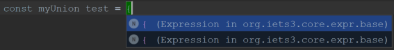
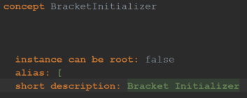
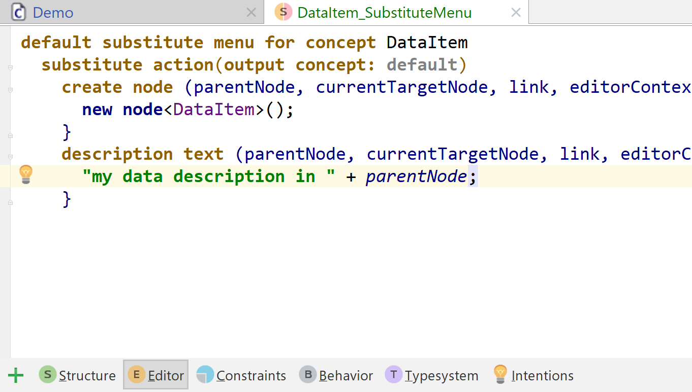
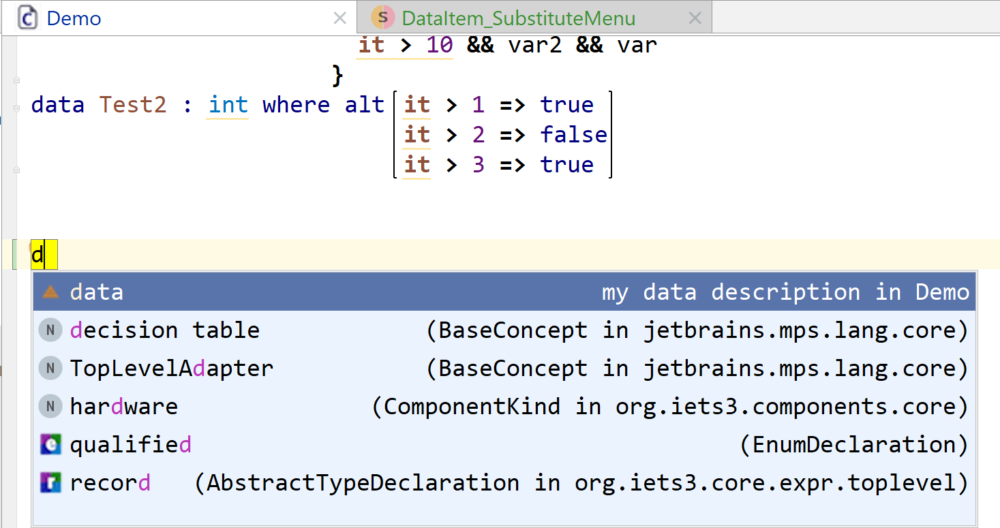
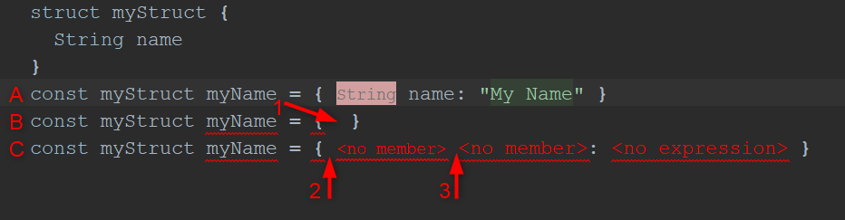
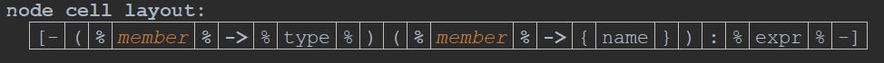
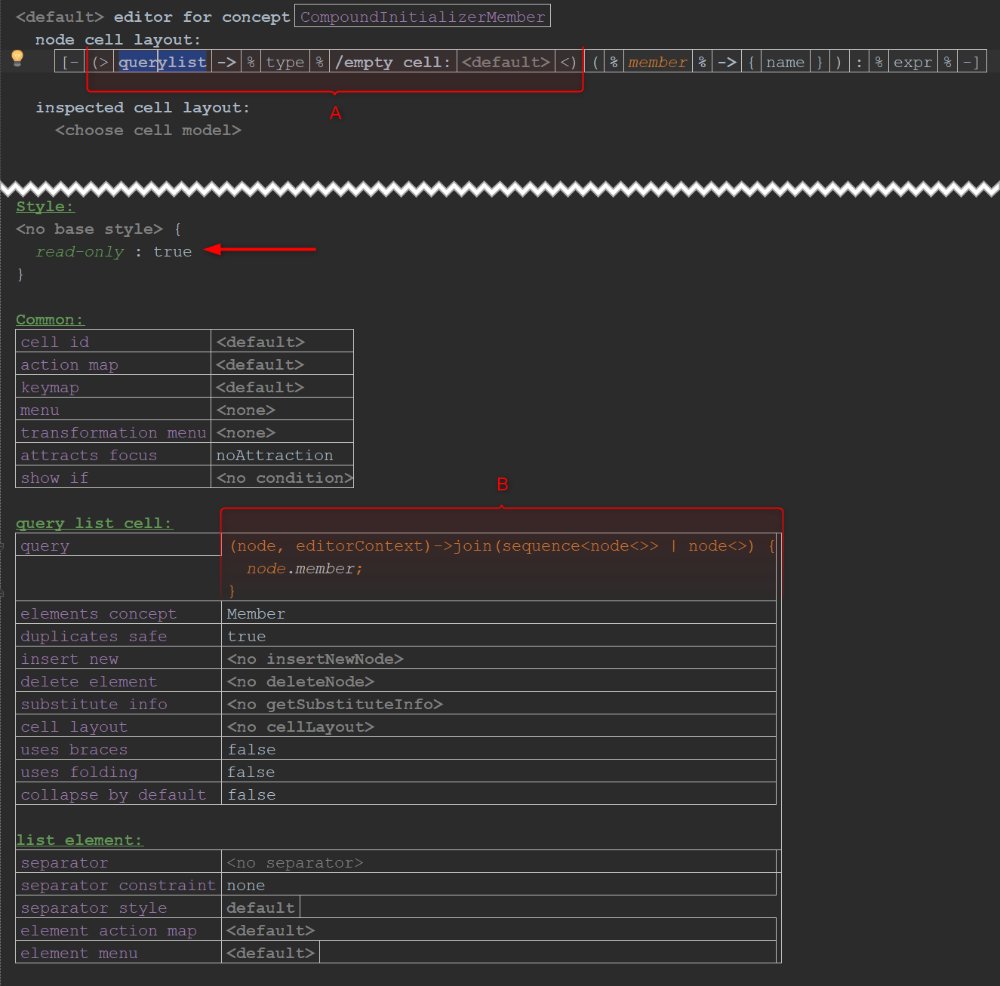

Editor aspect¶
The editor aspect defines the projectional editor of a concept.
General¶
What happens when you press F5 in the editor?
Specific Languages Blog: F5 in editor
How can you delete non-existing children, references, or properties from a node?
Switch to the reflective editor and remove the offending parts. There is also an enhancement script that can remove properties.
Menus¶
Explain the different menu related terms.
- Menu definitions have two flavours named and +default+ and can be defined in transformation or substitute menus.
-
-
Default substitutions will replace the default menu that MPS shows.
Shortcut: Ctrl+Space or Cmd+Space
Default menu
- Transformation menus define UI actions that will be shown in various locations. The menu is defined as a list of sections. Each section contains a list of menu parts for a set of locations. At runtime the menu parts and locations are used to generate the content of the completion menu. The contents of the completion menu are called menu items.
- Parameterized actions allow to calculate a list of elements of a specific type to be shown in the completion menu. They calculate all elements for the substitution menu and have an influence on the node creation. Moreover, they definesthe selection where the cursor should be placed.
-
How do you find out where a substitute menu entry is coming from?
Use the Menu Trace Tool window. More information can be found in Menu Trace Tool Window | MPS.
What’s the best way to improve the autocomplete description of concepts?
As you can see in the screenshot, the concepts of both opening braces are indistinguishable.

By changing the short description in the concept structure, I can change the description.
- What’s the best format to improve these descriptions?
- Is this way the correct/best one to change the autocomplete concept description?


asked by: @aquapp
In general, it’s up to the users and specific context to decide what makes sense to put to the description text. Usually it should provide additional semantic information to those not familiar with the language to help them to pick up the right concept from the code completion menu.
The short description in the concept is the original, simple way to provide static description in the code completion menu. You can also add your own substitute action in the substitute menu of the concept (editor aspect) to get full control over the code completion menu and to be able to generate the text dynamically based on the context.


answered by: @wsafonov
Languages¶
I need a specific graphical notation/feature for the editor.
Have a look at the full extension list from MPS-extensions.
I need hyperlinks.
Use the language com.mbeddr.mpsutil.hyperlink from mbeddr platform.
How do you create clickable links?
- Specific Languages Blog: Creating clickable URL links in the editor
- Specific Languages Blog: More clickable URL links
How can you include non-child relations in the editor?.
Use the language com.mbeddr.mpsutil.editor.querylist from MPS-extensions.
Editor declaration¶
Is there a disadvantage by using the indent layout instead of the indent cell mode?
No. There used to be performance issues with bigger models that were fixed in MPS 2021.1.
How do you use an empty text for empty cells?
Specific Languages Blog: Use empty text for empty cells
Explain all cell related variables.
A cell takes up a specific amount of space in the editor component (width and height).
- padding-left/right/top/bottom: a floating point number, which specifies the padding of a text cell, i.e. how much space will be between cell’s text and cell’s left and right sides, respectively.
- inset: representation of the borders of an element. It specifies the space that an element must leave at each of its edges.
- baseline: the line upon which most letters sit.
- ascent: the recommended distance above the baseline for singled spaced text.
- descent: the recommended distance below the baseline for singled spaced text.
- height: ascent + descent
- gap: space between cells in a collection. There is a left and right gap.
How can you set editor hints?
- you can set hints via
editorContext.getEditorComponent().getUpdater()- explicit hints for nodes
- initial hints globally; they behave similar to pushed hints.
-
via right-click: push editor hints and select a specific one.
-
via an EditorHintToggleAction (e.g. in action declarations)
- They are not visible in the push Editor hints menu.
- If you need the same behavior e.g. in intentions, you can use code from there (via ConceptEditorHintSettingsComponent.HintsState)
- Explicit hints for nodes and hints via EditorHintToggleAction. The usage of ConceptEditorHintSettingsComponent.HintsState is not so obvious.
How do you set the cursor to the first editable cell?

- (A) What it looks like after creation
- (B) Initial situation with cursor at (1): pressing Enter leads to (C)
The problem is, that in (C) the cursor is at (2), right before a read-only cell and thus editing or moving to the next cell is not possible. I would like the cursor to jump to the first editable cell, which is at position (3).
Structure of the new node in (C):
Editor of the new node in (C):

Usually, you would set the attracts focus property of the cell, where the cursor should be positioned, to attractsFocus or FirstEditableCell.
But, since (C.2 and C.3) are error cells, the default behaviour is to set the cursor in front of the first error cell, which is (C.2).
Therefore, change the first part of your editor to a querylist cell (A), which references the “member” in the cell properties (B) and set the read-only property on the querylist.

contributed by: @aquapp
Is it possible to access the selected value of one swing component from inside another swing component?
How can you access an icon stored in a concept?
Create a new custom cell:
How can you paint the background of certain editor cells with a different color based on analysis of the model?
- with the help of a conditional editor
- by using the class
NodeHighlightManager:
The second approach has a better performance, because the highlighter runs asynchronously and not during the editor rebuild.
How can you hide a custom cell in the editor? (show if property)
Custom cells expect only a cell provider in the inspector, but don’t offer the possibility to specify other attributes to set e.g. “show if”. How can I hide a custom cell under a specific condition? (MPS-33195)
The meta model actually allows to specify the show if property and other attributes on a custom cell and the generator will generate the correct code for it. It is just not included in the editor for the inspector. You can use the reflective editor to specify the condition.
Since these attributes are hidden and you need this knowledge to find them, the alternative for a better visibility is to surround the custom cell with a collection and set the show if property on the collection.
contributed by: @aquapp
Open API¶
How can you open the inspector programmatically?
- Specific Languages Blog: Opening Inspector automatically
- Specific Languages Blog: Opening Inspector automatically: Selection listeners
- Specific Languages Blog: Opening Inspector automatically: Editor extensions
How can you open the editor for a node programmatically?
How can you override an arbitrary editor?
Use the language de.slisson.mps.conditionalEditor from MPS-extensions.
How can you get the font of an editor?
How can you subscribe to editor changes?
How do you get the text of an EditorCell programmatically?
How can you find out if an editor cell is readonly?
How do you get an editor for a node as a swing component?
How do you get a Project instance for an ActionEvent?
How to you get the selection/ selected node in the editor?
How to get the current MPS project from within the editor?
Specific Languages Blog: How to get the current MPS project from within the editor
How do you find all open editors?
Specific Languages Blog: Finding all open editors
How do you programmatically collapse editor cells?
Is there a callback/hook when an editor tab closes?
When closing an editor tab, MPS removes the highlighting from all nodes in the editor. I.e., when an editor is opened again for the same root node all highlighting is gone.
In my code, I want to react on this editor-close event. Is there are way to implement a callback or hook which is called when an editor tab is closed?
You can register an EditorComponentCreateListener, that also receives an editorComponentDisposed event (example).
Is there a utility class related to editor hints?
Yes, there is in mbeddr: EditorHintHelper.
Bugs¶
Highlighting of constraint errors in inspector doesn’t work.
Known bug (MPS-32350). Pressing F5 helps.